Explore the studium App
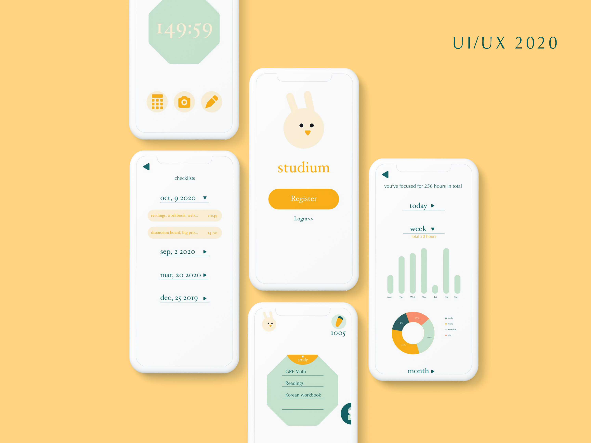
Explore the studium App
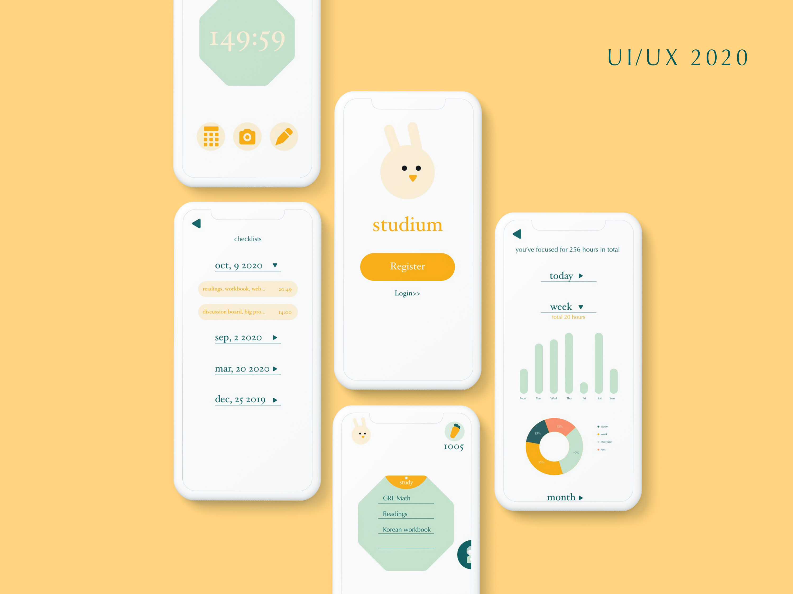
studium
Motivative and fun study app.
Tools used
Adobe XD, After Effects, Photoshop
Introduction
The studium app is a study app prototype aimed to help students or learners to be productive and stay away from distractions of all other apps including entertainment apps. The unique characteristic of the app is that it has a rewarding gashapon game built in which can be rewarding and motivating to the users and help them stay focused.
Design Hypothesis
I believe that creating a focus management app for people who have a hard time trying to be productive will help them to focus and concentrate, providing them a motivative and rewarding experience to stay focused. I will know the hypothesis is valid when I get most people agreeing with the functionality of the gashapon game and they will likel
Needfinding
In my needfinding process, I interviewed a few of my friends and I also made a google form to survey a broader range of potential users. The questions in my survey are as follows:
The overall response to my survey is that they all find it somewhat hard to put their phones away and to focus on their work. 100% of people think that quarantine also makes them less efficient at doing their work. Also, 100% of them consider smartphones as a big part of distraction when they are trying to focus. Therefore, I think that my hypothesis is correct and the app will be useful to my users. Many have also mentioned the forest app, so I also downloaded the app to see its functions and features. I found out that the “study together” feature exists in the app, however, the app cannot set certain apps that are allowed to be used such as camera app, calculator app, etc. I think it would be a useful feature to add. Additionally, through my observation and experiences, the forest app is not simple enough because it seems to have too many unnecessary features. One thing I didn’t put in my google form survey is about the Gashapon game I mentioned in my product statement, but I interviewed several friends and they all think that the Gashapon game sounds like a motivative and rewarding feature to add. This game is also what differentiates my app from the forest app. The forest app is so attached with the trees which users can buy but many trees in the app aren’t even cute. As a motivating feature and main characteristic of the app, it already loses some of its users. While focusing, the growing tree shows up on the screen, which is very much unnecessary and could be somehow distracting. My app, instead, keeps the gashapon feature on it’s own so the users are only able to access any part of the feature before or after the focusing period. Although it is a game, it only takes seconds to play one game and it’s highly fun and exciting to play.
Design Process
1. Product Backlog
| As a user, I want to be able to login to retrieve my data |
| As a user, I want to use the focus function to help me focus when I'm trying to do work |
| As a user, I want to have something motivational to keep me using the app |
| As a user, I want to have a checklist on the screen so I can check out tasks when finished |
| As a user, I want to be able to add friends to focus together |
| As a user, I want to be able to set up some functional apps(calculator, translator, camera) to be available, so I can use them when I really need to |
| As a user, I want to see an overview of my focused hours in days, weeks, months or years |
| As a user, I want to categorize my hours to study, work, etc |
2. Sprint 2
| As a visitor, I want to login from other devices to retrieve my focused hours |
| As a recurring user, I want to login from other devices to retrieve my friends list |
| As a recurring user, I want to login from other devices to retrieve my to-do lists |
| As a general user, I want the focus function on a very obvious spot on the screen so I can easily click on it to start. |
| As a general user, I want to be able to set a time frame between 30 mins to 3hrs focus time so that I can use the app flexibly for almost any period of time I need |
| As a general user, I want no distraction on the screen once I hit start so I don't get distracted by the app itself |
| As a member, I want some reward to keep me motivated before and while using the app |
| As a general user, I want a countdown on the screen to see how much time is left |
| As a general user, I want to start focus immediately after I hit start and no button for regret so that once I start, I will stop using my phone till the countdown is over |
| As a general user, I want to write a to-do list before I start focusing and having it displayed on the screen after I start to focus |
3. Sprint 2
| As a member, I don't want to be able to edit the checklist once I hit start, so I don't just spend time editing the list instead of actually doing work |
| As a member, I want to be able to invite friends from my friend list to study together |
| As a member, I want to be able to check my lists after I hit start focusing so I can see my progress |
| As a test taker, I want to see some encouraging words when I look at the screen telling me to keep up my work |
| As an app member, I want to search and add friends to my friend list so I can choose friends to study with |
| As a member, I don't want friends to see my focused hours so I have more privacy. (or I can set up if my friends can view my focused hours) |
| As a member, I want to set no more than 3 apps to use so that I don't get distracted by too many unnecessary apps I set up |
| As a member, I want to be able to delete friends from my friend list, just because |
| As a member, I want to change the app in the app list |
| As a non-motivated member, I want to focus on earning carrot coins to play the gashapon game that's built in the app |
| As a gashapon game addict, I want a page to see my collection of gashapon toys |
| As a member, I want to see all my checklists with time in my profile page so that I can view my progress |
| As a member, I want to see friends' profile photos showing on my focus screen so that I acknowledge the fact that they are also focusing together with me |
4. Sprint 3
| As a recurring user, I want to add tags to my hours so that I can easily view how much time I spent on what |
| As a user, I want to use different colors representing different tags so that I can distinguish them easily |
| As a user, I want to be able to tell the changes over time with the help of a line chart(or something similar) |
| As a user, I want to see how many hours I focused for each day, week, month and year |
| As a general user, I want some penalty when I exit the current app and start doing other things so that I'm being pushed to focus |
| As a general user, I want no other notifications distract me when I'm focusing |
and finally...
Click on the bar on the top of the page to experience the App
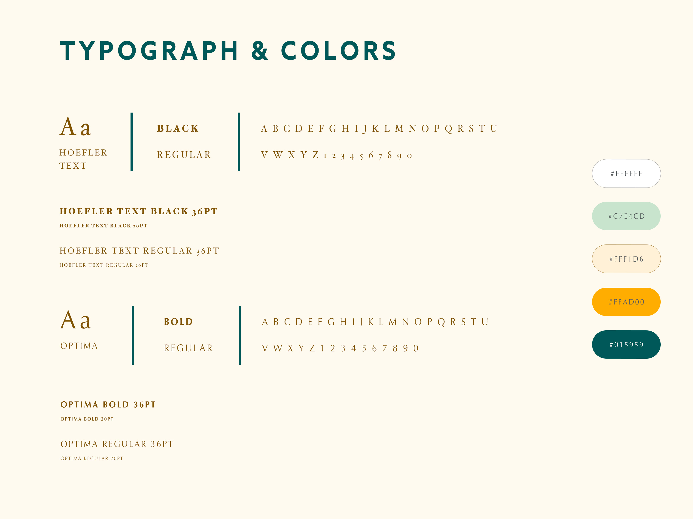58 screens
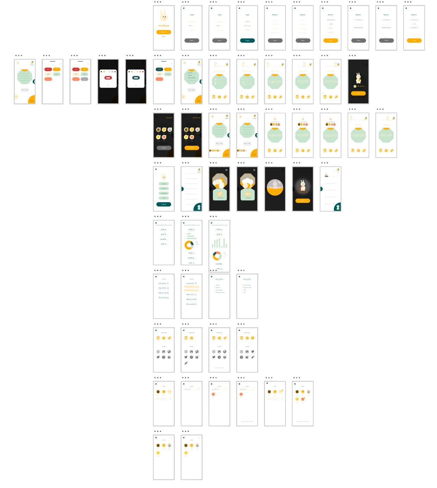Key Features
 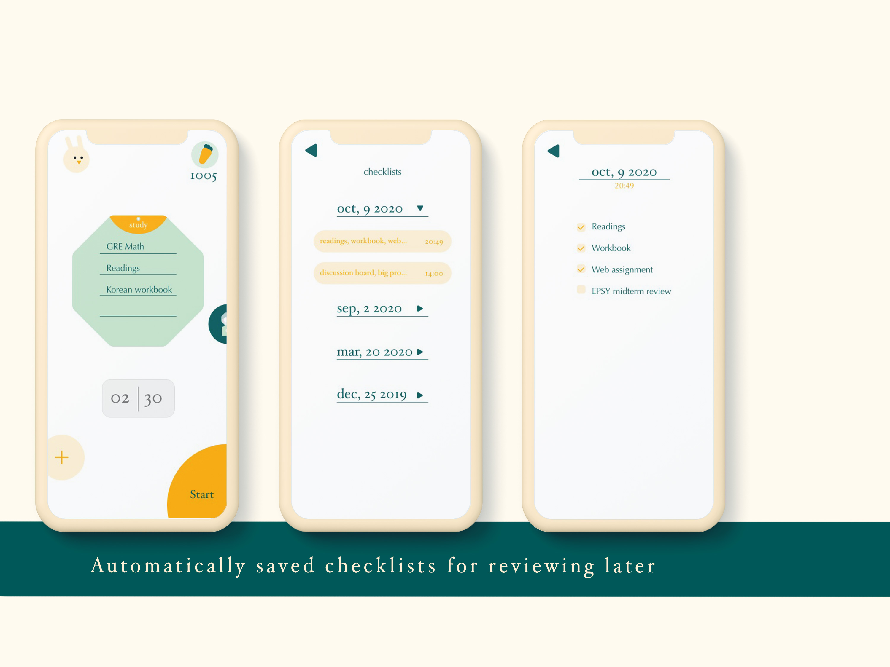
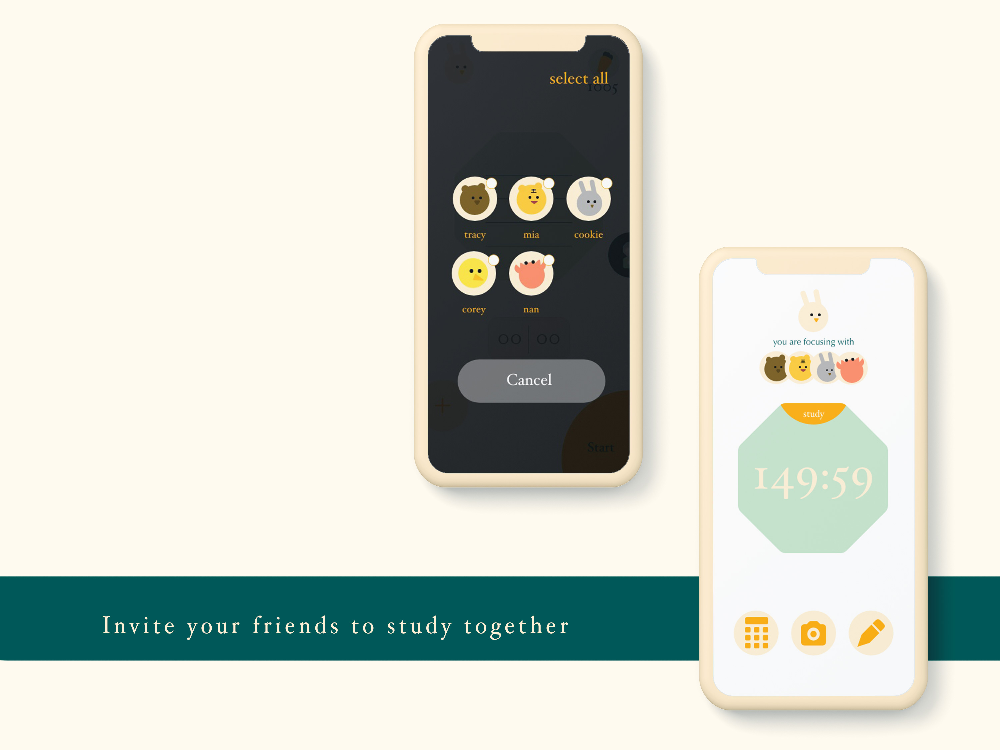
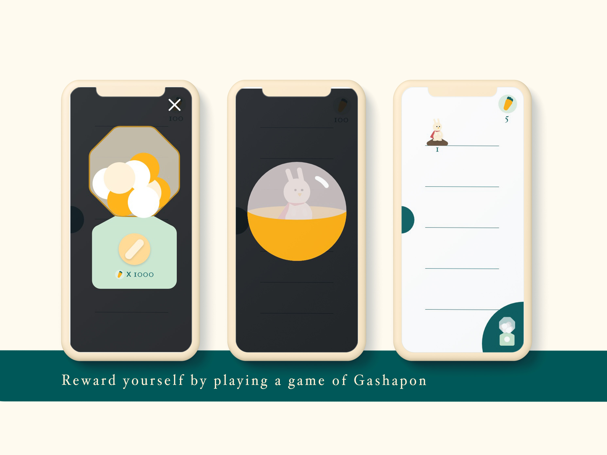
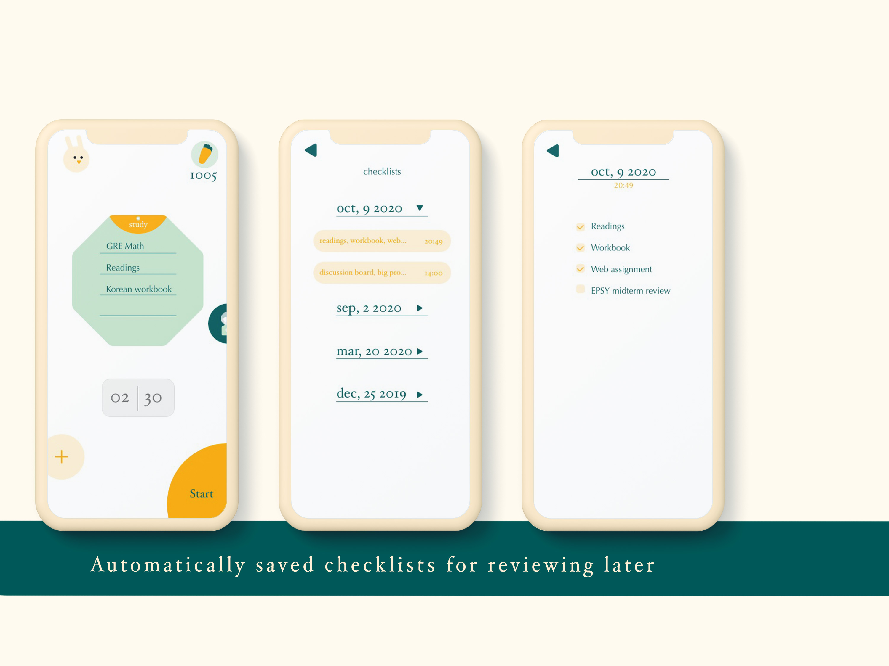
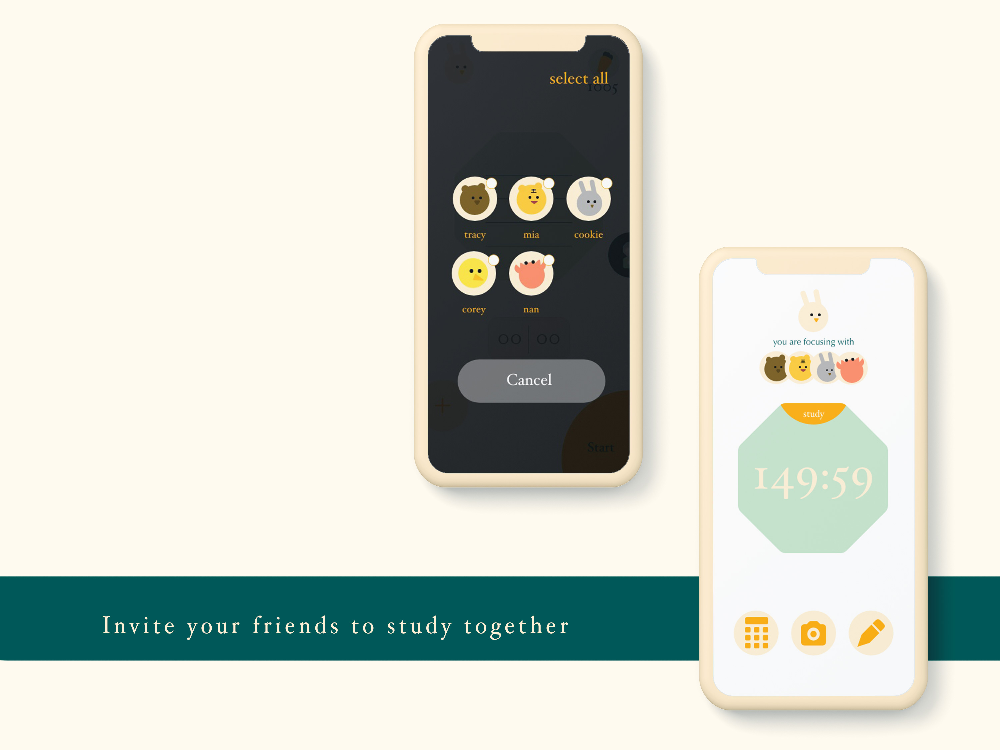
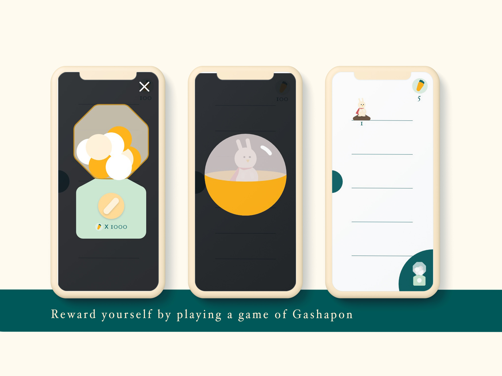
Animal figurines
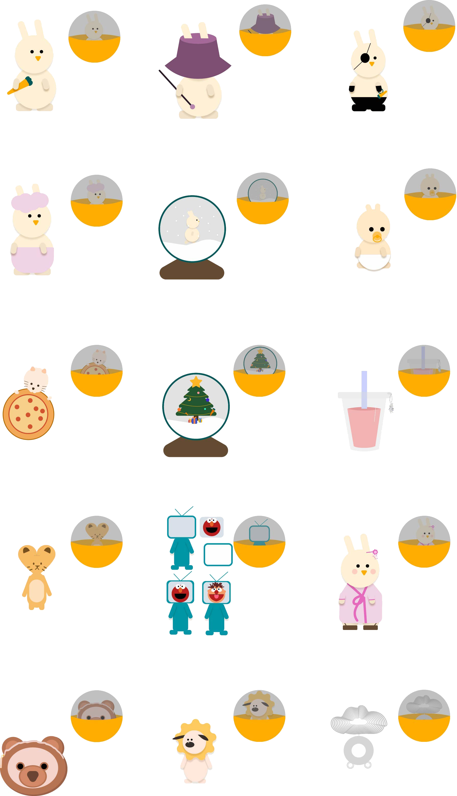Evaluation
After my first prototype, I got suggestions about my color selections of the font and other buttons. I thought they were helpful because some of my buttons did not look like buttons, instead, like text inputs. I reconsidered those color choices and added empty states for the login and register screens for a better UX. The emojis I initially had for friends’ profile photos did not show up in the actual testing process so I kept that in mind for my second prototype. The second prototype was where I added the most features, such as the study with friends feature, the completed gashapon game, adding friends, editing enabled apps, etc. After my second prototype, I found a couple of friends to test my app. They liked the functionality and gave me minor suggestions. They wish that there’s a tag feature where users can categorize their focus time and see a clear distribution of their hours. After I’ve done my final prototype for the app, I asked 6 of my friends to go through and test the app again. I got some valuable feedback which I considered and found helpful for future purposes. First, most of them are also forest users, they consider this app to have a cleaner look and feel to it. However, it is hard to sometimes navigate on the home page. There are rarely any word indications and even though there are signs and graphics. For example, the + sign conveys a clear message to me or recurring users which means adding friends to study together, it doesn’t seem to be friendly to first time users. Second, they would also like to see an unlocked list of gashapon game figurine silhouettes so that they are more motivated to use the app to study and collect those figurines. Third, they liked that the app does not have a deep focus mode toggle because the app doesn’t really work as what it is supposed to if the switch is off. Finally, and most importantly, they consider the app a successful app if all the functions in the prototype are in the actual app.
Thanks for reading:)